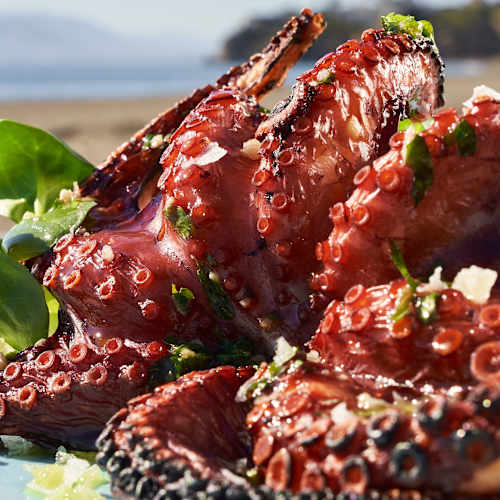
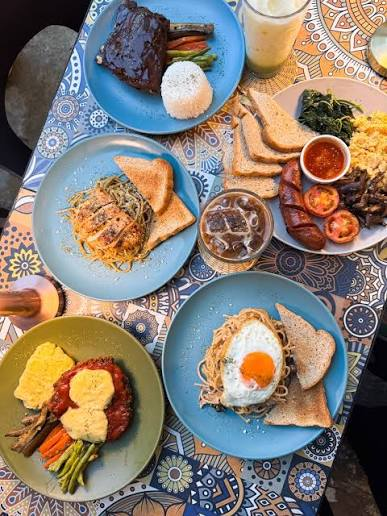
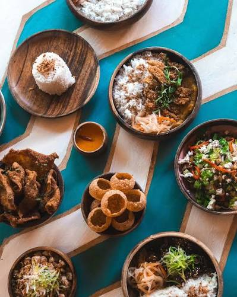
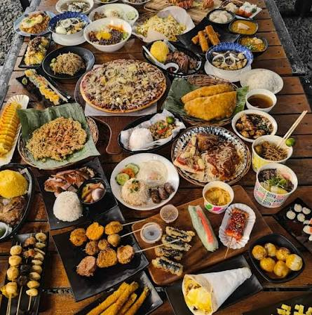
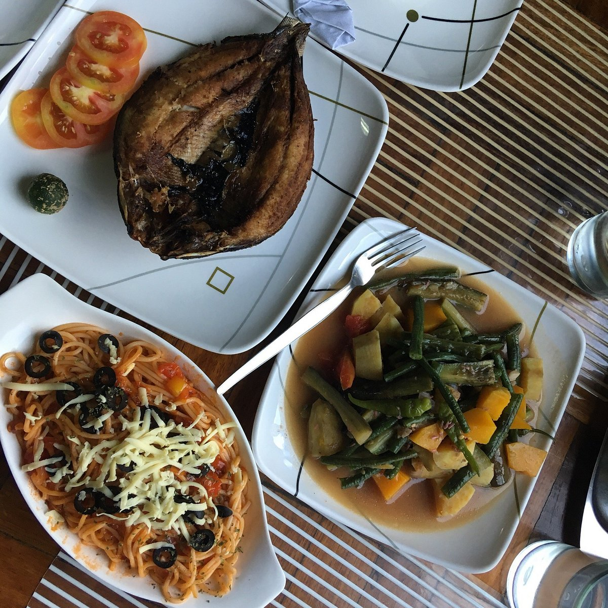
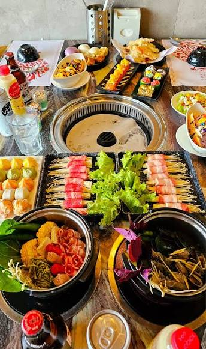

Bohol
Oasis Restaurant & Beach Club
A relaxing beachfront dining spot in Panglao
where visitors can enjoy food and drinks
while experiencing a tropical island atmosphere.
★★★★★
📍 Panglao, Bohol

Palawan
Kalui Seafood Restaurant
A popular Puerto Princesa dining destination
known for seafood and Filipino-inspired dishes
in a distinctive island-style atmosphere.
★★★★★
📍 Puerto Princesa, Palawan

Siargao
Happiness Restaurant Siargao
A casual restaurant in General Luna where
visitors can enjoy a variety of meals in the
lively atmosphere of Siargao's tourism area.
★★★★★
📍 General Luna, Siargao

Vigan
Gerry's Vigan
A Filipino restaurant where travelers can
enjoy familiar Filipino dishes while exploring
the historic streets and attractions of Vigan.
★★★★☆
📍 Vigan City, Ilocos Sur

Banaue
Uyami's Green View Lodge & Restaurant
A mountain-town restaurant where visitors
can enjoy meals while exploring Banaue and
the surrounding rice terraces and landscapes.
★★★★☆
📍 Banaue, Ifugao

Mayon / Albay
Tong Yang | SM City Legazpi
A buffet dining option in Legazpi City where
travelers can enjoy a variety of dishes while
exploring the Albay area near Mayon Volcano.
★★★★☆
📍 Legazpi City, Albay
Looking for More Restaurants?
Want to discover more restaurants and local food
experiences around the Philippines?
Please sign in so you can talk with the
ExplorePH Tourist Manager
and get more restaurant recommendations,
dining suggestions, and travel assistance.
Sign In to Talk to the Tourist Manager